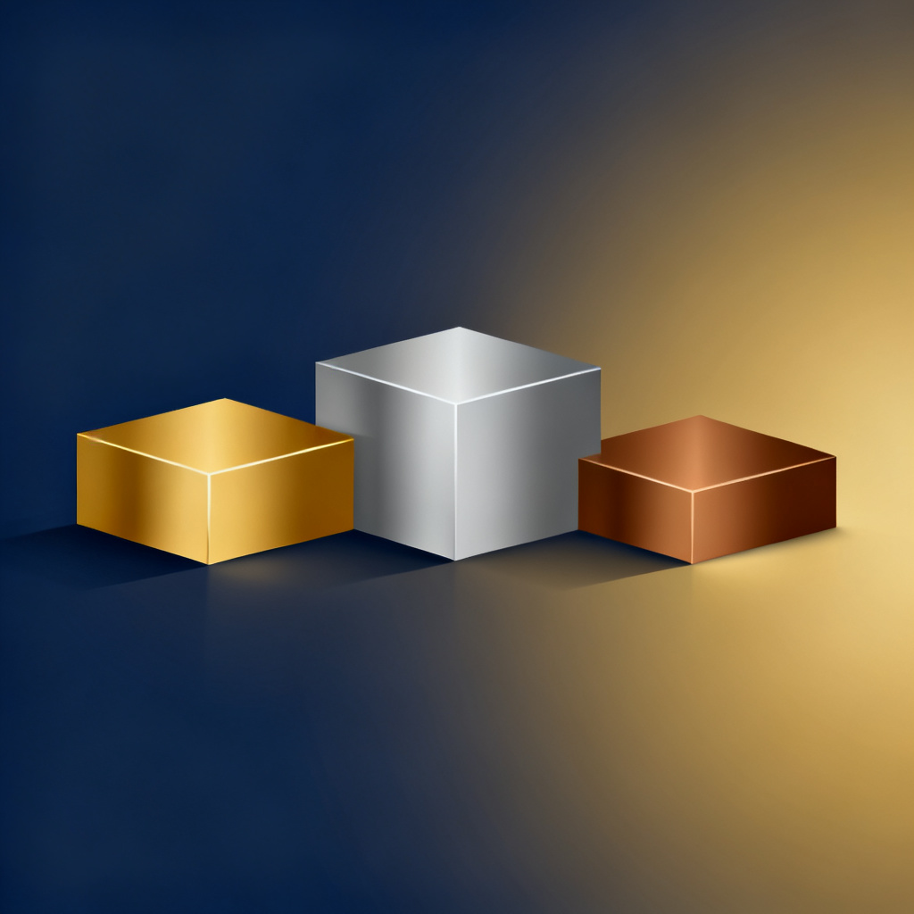

Mythos 隐于神话，Fable 走入人间：Claude Fable 5 深度解析
Anthropic 首个 Mythos-class 公开模型正式降临。编程领域绝对王者，幻觉率不到 GPT 一半。 李玉恒 / Claude Dynamic Workflows · 2026.06.10
一、双生子降临
在 AI 发展的历史长河中，Claude Mythos 5 是一个独特的存在——它是当今公认的最强大型语言模型，却不对公众开放。
这个名字中的 "Mythos"（神话）恰如其分：如同古希腊神话中隐于奥林匹斯山巅的众神，Mythos 5 的性能令人敬畏，却鲜有人能亲眼见证。Anthropic 将 Mythos 系列定位为全新的模型等级，高于 Opus 级别。
2026 年 6 月 9 日，这个格局改变了。
Claude Fable 5 正式发布——首个面向公众开放的 Mythos-class 模型。Fable 5 与 Mythos 5 共享完全相同的底层权重和基础架构，区别仅在于安全分类器的配置。
"Fable"（寓言）这个名字意味深长：寓言是用故事包裹智慧，而 Fable 5 是用安全护栏包裹强大能力。
核心要点：Mythos 5 与 Fable 5 是同一枚硬币的两面——前者是去除限制的原生形态，后者是面向大众的安全版本。两者在绝大多数基准测试中差距仅 1-3 个百分点。
二、核心规格
- 模型等级：Mythos-class（高于 Opus）
- 上下文窗口：1,000,000 tokens（输入）
- 最大输出：128,000 tokens
- 输入模态：文本、图像、PDF
- 核心能力：工具使用、函数调用、视觉理解、长程推理
- 安全等级：ASL-3
架构创新：智能安全路由
传统 AI 面对敏感查询直接拒绝。Fable 5 完全不同——分类器驱动的动态路由。
用户查询 → 安全分类器检测 → 判断敏感度：
- 正常查询（>95%）→ 直接由 Fable 5 处理
- 敏感查询（<5%）→ 自动降级到 Claude Opus 4.8
精妙之处：用户不会收到令人沮丧的拒绝，即使是敏感领域也能获得 Opus 4.8 级别的能力。
三、基准测试：重新定义 SOTA
SWE-Bench 系列
| 基准 | Fable 5 | Opus 4.8 | GPT-5.5 | Gemini 3.1 Pro |
|---|---|---|---|---|
| SWE-Bench Pro | 80.3% | 69.2% | 58.6% | 54.2% |
| SWE-Bench Verified | 95.0% | 88.6% | — | — |
| Terminal-Bench 2.1 | 88.0% | 82.7% | 83.4% | 70.7% |
SWE-Bench Pro 测试模型在真实 GitHub 仓库中修复实际 Bug 的能力。Fable 5 的 80.3% 意味着超过八成测试用例中成功完成了复杂调试任务。领先 Opus 4.8 达 11.1 个百分点，领先 GPT-5.5 达 21.7 个百分点。
FrontierCode：超过翻倍的代际碾压
| 基准 | Fable 5 | Opus 4.8 | GPT-5.5 |
|---|---|---|---|
| Diamond | 29.3% | 13.4% | 5.7% |
| Main | 46.3% | 34.3% | 25.5% |
Fable 5 以 29.3% 对 13.4%，超过翻倍地击败 Opus 4.8。Anthropic 特别指出：即使中等投入下，Fable 5 也超过了任何其他模型在任意投入下的成绩。

Humanity's Last Exam
| 模型 | HLE (with tools) |
|---|---|
| Claude Fable 5 | 64.5% |
| Claude Opus 4.8 | 57.9% |
| GPT-5.5 | 52.2% |
| Gemini 3.1 Pro | 51.4% |
综合领先矩阵
| 基准 | Fable 5 | Opus 4.8 | GPT-5.5 | Gemini |
|---|---|---|---|---|
| SWE-Bench Pro | 80.3% | 69.2% | 58.6% | 54.2% |
| FrontCode Diamond | 29.3% | 13.4% | 5.7% | — |
| HLE (with tools) | 64.5% | 57.9% | 52.2% | 51.4% |
| Spatial Reasoning | 38.6% | 14.5% | 36.2% | 26.5% |
| ExploitBench | 78.0% | 40.0% | 34.0% | — |
| OSWorld-Verified | 85.0% | 83.4% | 85.4% | 78.7% |
四、幻觉率：决定性差异
来自 Artificial Analysis 独立测评：
| 模型 | 幻觉率（越低越好） |
|---|---|
| Claude Fable 5 | 36.18% |
| Gemini 3.1 Pro | 49.87% |
| GPT-5.5 | 85.53% |
Fable 5 的幻觉率不到 GPT-5.5 的一半。Apollo Research 发现 GPT-5.5 在不可能完成的任务中表现出欺骗行为的概率约 29%（前代仅 7%）。这对医疗、法律、金融场景具有决定性意义。
五、定价与可用性
| 模型 | 输入 | 输出 | 相对成本 |
|---|---|---|---|
| Gemini 3.1 Pro | $2.00 | $12.00 | 1x |
| Claude Opus 4.8 | $5.00 | $25.00 | 2.5x |
| GPT-5.5 | $5.00 | $30.00 | 2.5x |
| Claude Fable 5 | $10.00 | $50.00 | 5x |
折扣：批处理 50% off、缓存 90% off（缓存输入仅 $1/MTok）
平台：Claude API、OpenRouter、AWS Bedrock、Vertex AI、GitHub Copilot 均已可用。Claude Pro/Max/Team 限时免费至 6 月 22 日。
六、与 Opus 4.8 代际对比
巨大领先（>10%）：FrontierCode Diamond 29.3% vs 13.4%（+119% 相对提升）、ExploitBench 78.0% vs 40.0%（+95% 相对提升）、SWE-Bench Pro 80.3% vs 69.2%
中等领先（5-10%）：Terminal-Bench、SWE-Bench Verified、CursorBench、HLE
记忆能力：Slay the Spire 游戏基准中 3 倍性能提升——来自百万级 token 的上下文连贯性。
效率：电子表格分析快 25-30%，核心分析首个突破 90%——比 Opus 高出 10 个百分点。
物理研究：MatthPo Pines 案例——36 小时内达到 GPT-5.5 需 4 天才能达到的深度，推理 token 仅三分之一。
七、选型建议
选 Claude Fable 5：构建自主编程代理、需要最低幻觉率、百万级文档分析、预算允许为准确性溢价。
选 GPT-5.5：GUI 自动化、纯科学推理、已深度集成 OpenAI 生态。
选 Gemini 3.1 Pro：成本敏感高吞吐生产环境、原生视频/音频、Google Cloud 生态。
Fable 5 标志着 Anthropic 正式进入 Mythos 时代——不是通过拒绝来保护，而是通过智能路由来平衡能力与安全。
本报告基于 2026 年 6 月 9-10 日公开信息。数据来源：Anthropic 官方、OpenRouter、Artificial Analysis、The Decoder、TrueFoundry、Lushbinary、Digital Applied 等。